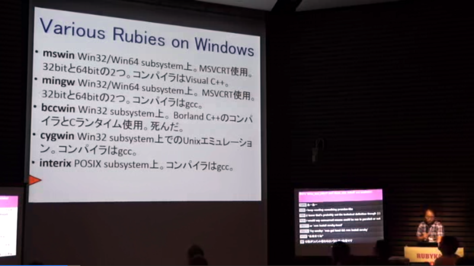
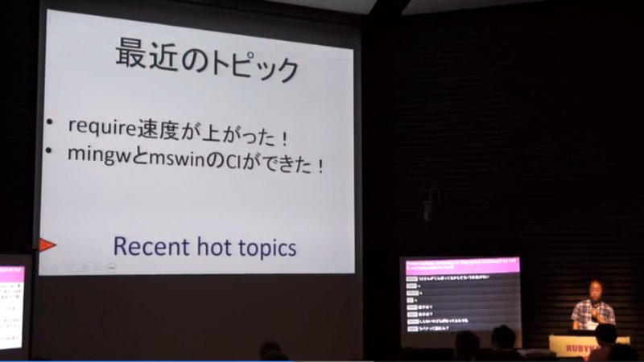
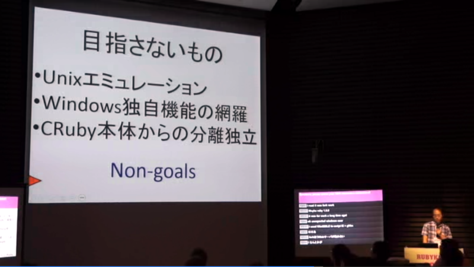
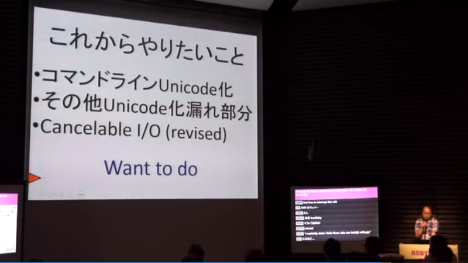
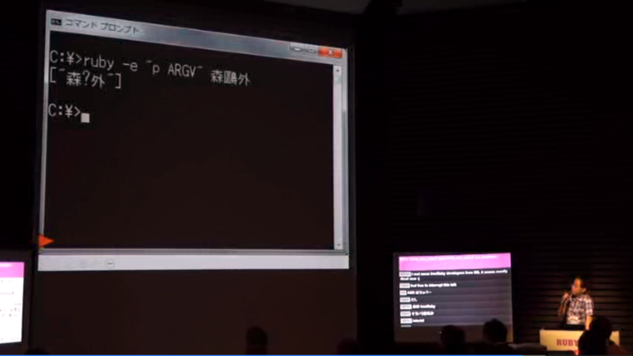
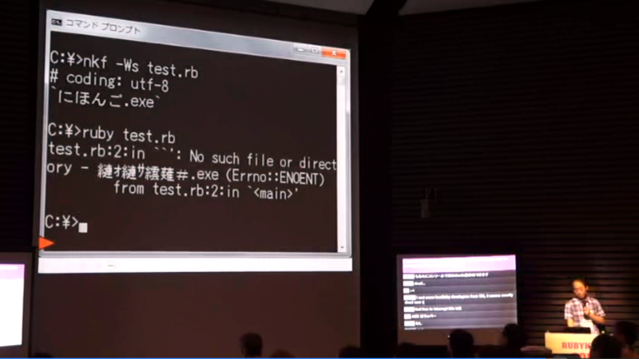
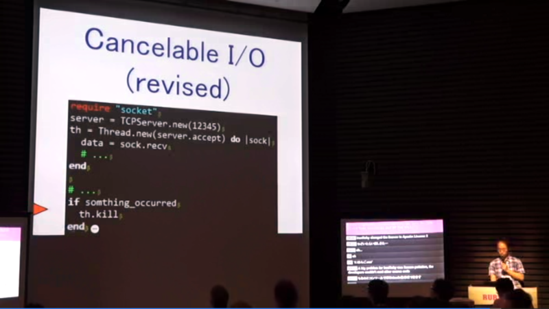

Ruby for Windows について
公開日：
RubyKaigi 2013, Ruby on Windows | OPC Diary - No Code, No Life. 経由で興味をもったのだけど、緑の人がおすすめだというので見てみた。RubyKaigi での @unak さんのセッション。
Ruby for Windows の種類

いっぱいあるのだけど、今の主流はだいたい2種類＋1種類なのかな（IronRubyぇ……）。
mswin
コンパイラは Visual C++ 。
unak さんがだいたいやっているのかな。
ActiveScriptRuby
IActiveScript を mswin に提供する ActiveX コントロール……なのらしい。
作者は arton さん。NougakuDoCompanion - Home を作ってる方だったんだね。
Ruby for Windows の歴史

割愛。mswin と mingw の Ruby の CI 環境は Windows Azure でやっているのだそうだ。あと、Microsoft から Visual Studio Ultimate が提供されているらしい（太っ腹！
Ruby for Windows の行方

基本的に「CRuby に追従する」という姿勢らしい。

コマンドラインの Unicode 対応

いたたたたｔ……互換性の問題で難しいところもあるという。
そのほか、Unicode 化が漏れている部分への対応

いててててｔ……
Windows XP 切り捨て

ちょっと面白かったのは Cancelable I/O の話で、並行処理関係の API は Windows Vista（Windows 6.0）でかなり強化されているのだそうだ。というわけで、Windows XP のサポートが切れ次第、さっくり新しい API へ移行したいとのこと（？）。
いい内容ですよ！RT @daruyanagi 帰ったら見よう / “RubyKaigi 2013, Ruby on Windows | OPC Diary - No Code, No Life.” URL
確かに。